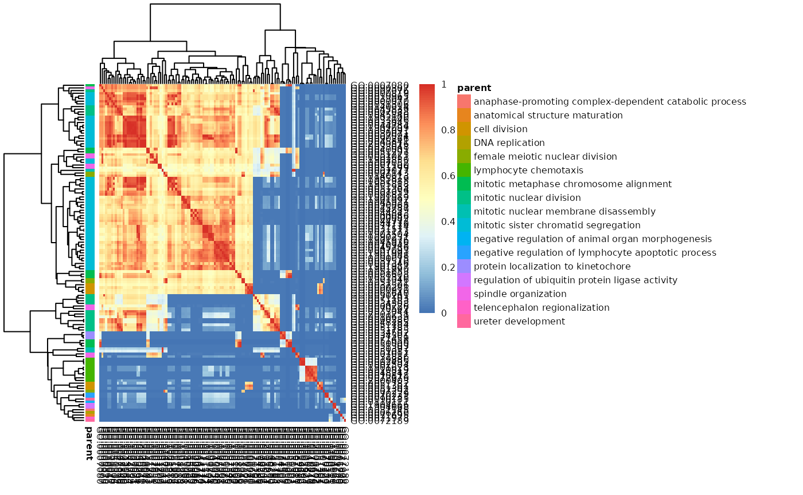
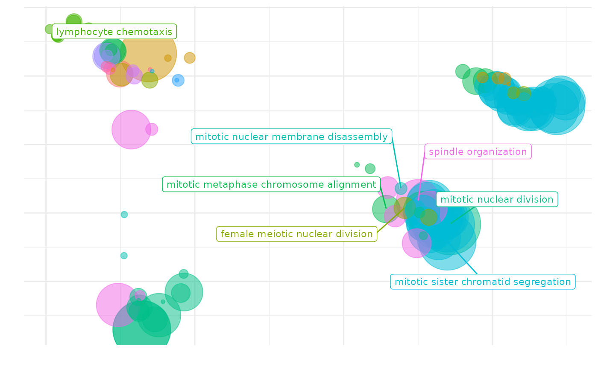
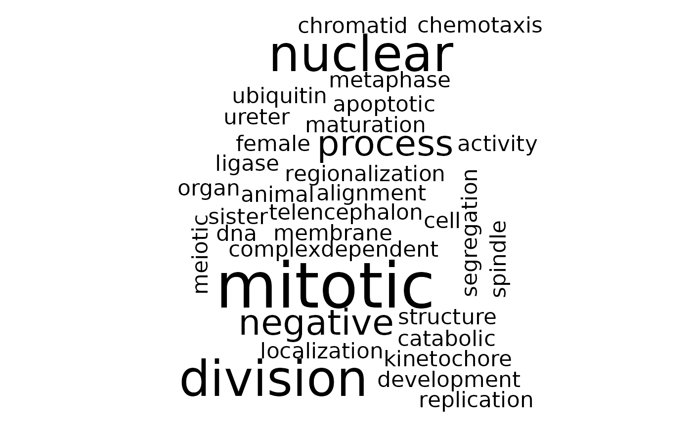

Using the rrvgo package
Sergi Sayols
2023-12-15
rrvgo.RmdIntroduction to rrvgo
Gene Ontologies (GO) are often used to guide the interpretation of high-throughput omics experiments, with lists of differentially regulated genes being summarized into sets of genes with a common functional representation. Due to the hierachical nature of Gene Ontologies, the resulting lists of enriched sets are usually redundant and difficult to interpret.
rrvgo aims at simplifying the redundance of GO sets by
grouping similar terms based on their semantic similarity. It also
provides some plots to help with interpreting the summarized terms.
This software is heavily influenced by REVIGO. It mimics a good part of its
core functionality, and even some of the outputs are similar. Without
aims to compete, rrvgo tries to offer a programatic
interface using available annotation databases and semantic similarity
methods implemented in the Bioconductor project.
Using rrvgo
Getting started
Starting with a list of genes of interest (eg. coming from a differential expression analysis), apply any method for the identification of eneriched GO terms (see GOStats or GSEA).
rrvgo does not care about genes, but GO terms. The input
is a vector of enriched GO terms, along with (recommended, but not
mandatory) a vector of scores. If scores are not provided,
rrvgo takes the GO term (set) size as a score, thus
favoring broader terms.
Calculating the similarity matrix and reducing GO terms
First step is to get the similarity matrix between terms. The
function calculateSimMatrix takes a list of GO terms for
which the semantic simlarity is to be calculated, an OrgDb
object for an organism, the ontology of interest and the method to
calculate the similarity scores.
library(rrvgo)
go_analysis <- read.delim(system.file("extdata/example.txt", package="rrvgo"))
simMatrix <- calculateSimMatrix(go_analysis$ID,
orgdb="org.Hs.eg.db",
ont="BP",
method="Rel")The semdata parameter (see
?calculateSimMatrix) is not mandatory as it is calculated
on demand. If the function needs to run several times with the same
organism, it’s advisable to save the
GOSemSim::godata(orgdb, ont=ont) object, in order to reuse
it between calls and speedup the calculation of the similarity
matrix.
From the similarity matrix one can group terms based on similarity.
rrvgo provides the reduceSimMatrix function
for that. It takes as arguments i) the similarity matrix, ii) an
optional named vector of scores associated to each GO term,
iii) a similarity threshold used for grouping terms, and iv) an orgdb
object.
scores <- setNames(-log10(go_analysis$qvalue), go_analysis$ID)
reducedTerms <- reduceSimMatrix(simMatrix,
scores,
threshold=0.7,
orgdb="org.Hs.eg.db")reduceSimMatrix groups terms which are at least within a
similarity below threshold, and selects as the group
representative the term with the higher score within the group. In case
the vector of scores is not available, reduceSimMatrix can
either use the uniqueness of a term (default), or the GO term
size. In the case of size, rrvgo will
fetch the GO term size from the OrgDb object and use it as
the score, thus favoring broader terms. Please note that scores
are interpreted in the direction that higher are better,
therefore if you use p-values as scores, minus log-transform them
before.
NOTE:rrvgo uses the similarity between
pairs of terms to compute a distance matrix, defined as
(1-simMatrix). The terms are then hierarchically clustered
using complete linkage, and the tree is cut at the desired threshold,
picking the term with the highest score as the representative of each
group.
Therefore, higher thresholds lead to fewer groups, and the threshold
should be read as the minimum similarity between group
representatives.
Plotting and interpretation
rrvgo provides several methods for plotting and
interpreting the results.
Similarity matrix heatmap
Plot similarity matrix as a heatmap, with clustering of columns of rows turned on by default (thus arranging together similar terms).
heatmapPlot(simMatrix,
reducedTerms,
annotateParent=TRUE,
annotationLabel="parentTerm",
fontsize=6)
The function internally uses pheatmap,
and further parameters can be passed to this function.
Scatter plot depicting groups and distance between terms
Plot GO terms as scattered points. Distances between points represent the similarity between terms, and axes are the first 2 components of applying a PCoA to the (di)similarity matrix. Size of the point represents the provided scores or, in its absence, the number of genes the GO term contains.
scatterPlot(simMatrix, reducedTerms)
Treemap plot
Treemaps are space-filling visualization of hierarchical structures. The terms are grouped (colored) based on their parent, and the space used by the term is proportional to the score. Treemaps can help with the interpretation of the summarized results and also comparing differents sets of GO terms.
treemapPlot(reducedTerms)
treemap
The function internally uses treemap,
and further parameters can be passed to this function.
Word cloud
Word clouds are visualizations which reproduce a text putting emphasis to words which appear frequently in a text. They can help to identify processes and functions that happen more commonly in a set of enriched GO terms, as well as comparing between different sets.
wordcloudPlot(reducedTerms, min.freq=1, colors="black")
The function internally uses wrodcloud,
and further parameters can be passed to this function.
Shiny app
To make the software more accessible to a non-technical audience,
rrvgo packages a shiny app which can be accessed calling
the shiny_rrvgo() function from the R console.
rrvgo::shiny_rrvgo()
shiny_app
The app offers interactive access to the plots and tables
calculated by rrvgo.
Currently supported
Similarity methods
All similarity measures available are those implemented in the GOSemSim package, namely the Resnik, Lin, Relevance, Jiang and Wang methods. See the Semantic Similarity Measurement Based on GO section from the GOSeSim documentation for more details.
Organisms
Bioconductor current provides OrgDb objects for 20
species provided by the following packages:
| Package | Organism |
|---|---|
| org.Ag.eg.db | Anopheles |
| org.At.tair.db | Arabidopsis |
| org.Bt.eg.db | Bovine |
| org.Ce.eg.db | Worm |
| org.Cf.eg.db | Canine |
| org.Dm.eg.db | Fly |
| org.Dr.eg.db | Zebrafish |
| org.EcK12.eg.db | E coli strain K12 |
| org.EcSakai.eg.db | E coli strain Sakai |
| org.Gg.eg.db | Chicken |
| org.Hs.eg.db | Human |
| org.Mm.eg.db | Mouse |
| org.Mmu.eg.db | Rhesus |
| org.Mxanthus.db | Myxococcus xanthus DK 1622 |
| org.Pf.plasmo.db | Malaria |
| org.Pt.eg.db | Chimp |
| org.Rn.eg.db | Rat |
| org.Sc.sgd.db | Yeast |
| org.Ss.eg.db | Pig |
| org.Xl.eg.db | Xenopus |
If the organism is not supported in Bioconductor, you can still build
your own OrgDb object usign the AnnotationForge
package and rendering the necessary data for semantic similarity using
the GOSemSim package with:
my_new_fancy_orgdb_object <- 'org.Zz.eg.db'
hsGO <- GOSemSim::godata(my_new_fancy_orgdb_object, ont="MF")Demo data
Taken as is from the DOSE package, which was derived from the R package breastCancerMAINZ. It contains 200 samples with breast cancer at different grades (I, II and III). The dataset basically contains log2 ratios of the geometric means of grade III vs. grade I samples ( 34 vs. 29 repectively).
Citing rrvgo
Please consider citing rrvgo if used in support of your own research:
citation("rrvgo")## To cite package 'rrvgo' in publications use:
##
## Sayols, S (2023). rrvgo: a Bioconductor package for interpreting
## lists of Gene Ontology terms. microPublication Biology.
## 10.17912/micropub.biology.000811
##
## A BibTeX entry for LaTeX users is
##
## @Article{,
## title = {rrvgo: a Bioconductor package to reduce and visualize Gene Ontology terms},
## author = {Sergi Sayols},
## year = {2023},
## journal = {microPublication Biology},
## doi = {10.17912/micropub.biology.000811},
## url = {https://www.micropublication.org/journals/biology/micropub-biology-000811},
## }Reporting problems or bugs
If you run into problems using rrvgo, the Bioconductor Support site is a good first place to ask for help. If you think there is a bug or an unreported feature, you can report it using the rrvgo github site.
Session info
The following package and versions were used in the production of this vignette.
## R version 4.3.2 (2023-10-31)
## Platform: x86_64-pc-linux-gnu (64-bit)
## Running under: Debian GNU/Linux trixie/sid
##
## Matrix products: default
## BLAS: /usr/lib/x86_64-linux-gnu/atlas/libblas.so.3.10.3
## LAPACK: /usr/lib/x86_64-linux-gnu/atlas/liblapack.so.3.10.3; LAPACK version 3.11.0
##
## locale:
## [1] LC_CTYPE=en_US.UTF-8 LC_NUMERIC=C
## [3] LC_TIME=en_US.UTF-8 LC_COLLATE=en_US.UTF-8
## [5] LC_MONETARY=en_US.UTF-8 LC_MESSAGES=en_US.UTF-8
## [7] LC_PAPER=en_US.UTF-8 LC_NAME=C
## [9] LC_ADDRESS=C LC_TELEPHONE=C
## [11] LC_MEASUREMENT=en_US.UTF-8 LC_IDENTIFICATION=C
##
## time zone: Europe/Madrid
## tzcode source: system (glibc)
##
## attached base packages:
## [1] stats graphics grDevices utils datasets methods base
##
## other attached packages:
## [1] rrvgo_1.15.1 knitr_1.45 BiocStyle_2.28.1
##
## loaded via a namespace (and not attached):
## [1] DBI_1.1.3 bitops_1.0-7 rlang_1.1.2
## [4] magrittr_2.0.3 gridBase_0.4-7 compiler_4.3.2
## [7] RSQLite_2.3.1 png_0.1-8 systemfonts_1.0.4
## [10] vctrs_0.6.4 stringr_1.5.1 pkgconfig_2.0.3
## [13] crayon_1.5.2 fastmap_1.1.1 XVector_0.40.0
## [16] ellipsis_0.3.2 labeling_0.4.3 utf8_1.2.4
## [19] promises_1.2.1 rmarkdown_2.25 ragg_1.2.5
## [22] purrr_1.0.2 bit_4.0.5 xfun_0.41
## [25] zlibbioc_1.46.0 cachem_1.0.8 GenomeInfoDb_1.36.4
## [28] jsonlite_1.8.8 blob_1.2.4 highr_0.10
## [31] later_1.3.1 parallel_4.3.2 R6_2.5.1
## [34] bslib_0.6.0 stringi_1.8.1 RColorBrewer_1.1-3
## [37] reticulate_1.34.0 jquerylib_0.1.4 GOSemSim_2.26.1
## [40] Rcpp_1.0.11 bookdown_0.36.2 IRanges_2.34.1
## [43] httpuv_1.6.12 Matrix_1.6-4 igraph_1.5.1
## [46] tidyselect_1.2.0 yaml_2.3.7 codetools_0.2-19
## [49] lattice_0.22-5 tibble_3.2.1 Biobase_2.60.0
## [52] shiny_1.8.0 withr_2.5.2 KEGGREST_1.40.1
## [55] askpass_1.2.0 evaluate_0.23 treemap_2.4-4
## [58] desc_1.4.2 xml2_1.3.5 Biostrings_2.68.1
## [61] pillar_1.9.0 BiocManager_1.30.22 stats4_4.3.2
## [64] NLP_0.2-1 generics_0.1.3 rprojroot_2.0.3
## [67] RCurl_1.98-1.13 S4Vectors_0.38.2 ggplot2_3.4.4
## [70] munsell_0.5.0 scales_1.2.1 xtable_1.8-4
## [73] glue_1.6.2 slam_0.1-50 pheatmap_1.0.12
## [76] tools_4.3.2 tm_0.7-11 data.table_1.14.8
## [79] RSpectra_0.16-1 fs_1.6.3 grid_4.3.2
## [82] umap_0.2.10.0 AnnotationDbi_1.62.2 colorspace_2.1-0
## [85] GenomeInfoDbData_1.2.10 cli_3.6.1 textshaping_0.3.6
## [88] fansi_1.0.5 dplyr_1.1.3 gtable_0.3.4
## [91] sass_0.4.7 digest_0.6.33 BiocGenerics_0.46.0
## [94] wordcloud_2.6 ggrepel_0.9.4 org.Hs.eg.db_3.17.0
## [97] farver_2.1.1 memoise_2.0.1 htmltools_0.5.7
## [100] pkgdown_2.0.7 lifecycle_1.0.4 httr_1.4.7
## [103] GO.db_3.17.0 mime_0.12 openssl_2.1.1
## [106] bit64_4.0.5